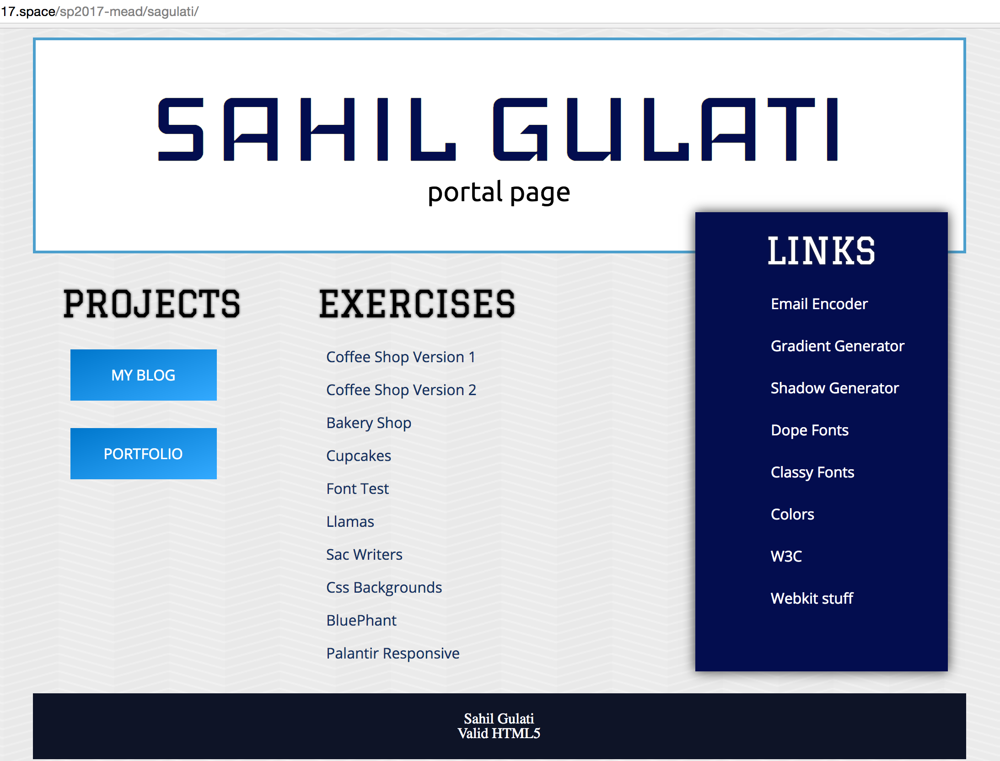

I made this simple portal for a design class. I wanted to do something different so I "misaligned" the link box. Now, the user first sees the title (cuz it's huge) and then the tool box because it is misaligned. So that it does not look like a mistake I added a shadow. This portal is mostly used by myself and I definitely would visit this site in fututre to get access to the links from the tool box. For the buttons on left side I added a gradient which surprisingly look decent. :P This Portal basically was an experiment which worked out quite well.

The site is live here.